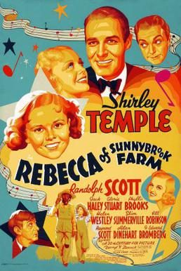
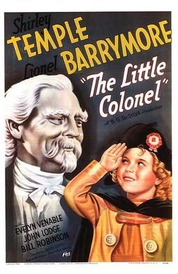
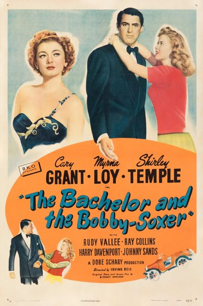

THE STANFORD THEATRE
Now Showing
·
Upcoming
·
Past
·
Search
February 15 - 16, 2014
Remembering Shirley Temple
1 bill
February 15 - 16, 2014

Rebecca of Sunnybrook Farm (1938)
72 min
Little Miss Broadway (1938)
70 min
Curly Top (1935)
74 min
Poor Little Rich Girl (1936)
79 min

The Little Colonel (1935)
81 min

The Bachelor and the Bobby-Soxer (1947)
97 min
Archived
•
StanfordTheatre.org Original